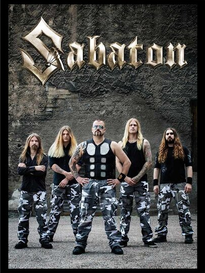
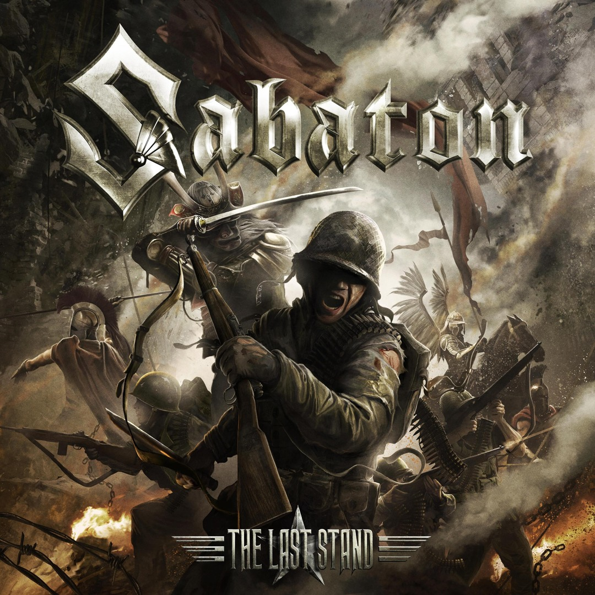
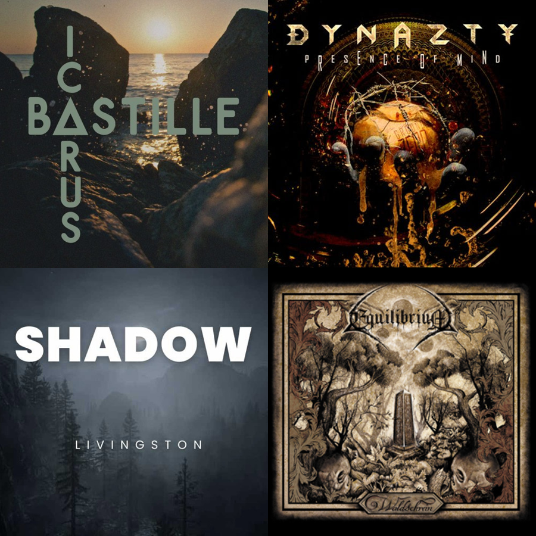
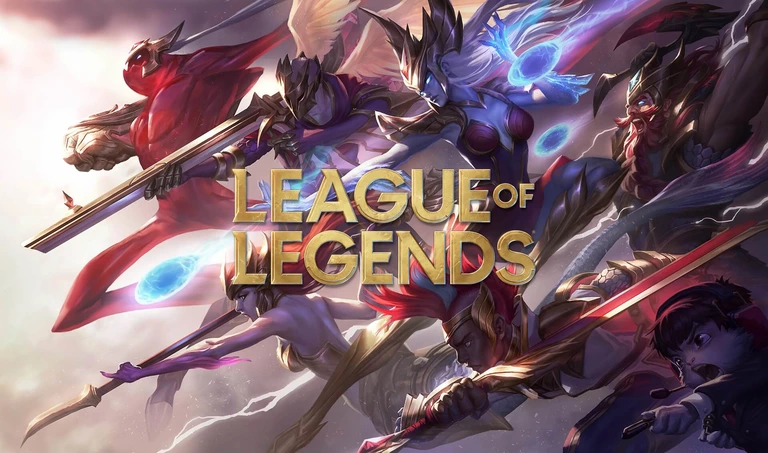
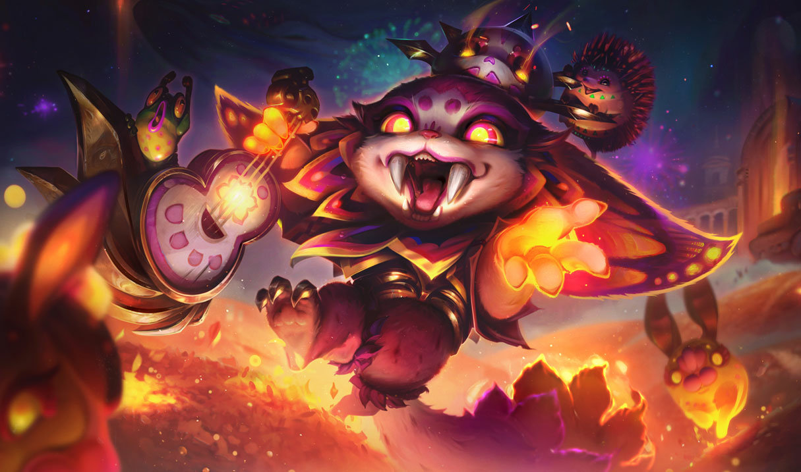
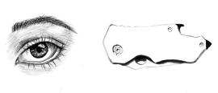
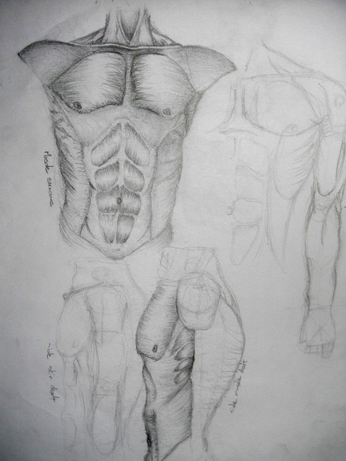

My Favorite HobbiesClick on the hobby you want to know more about |
|---|
My favorite music band |
Sabaton - Power metal bandSabaton is a Swedish power metal band from Falun, formed in 1999. Known for their powerful, anthemic sound, |
The Last Stand - Sabaton"The Last Stand" by Sabaton is a power metal anthem inspired by the historic 1897 Battle of Shiroyama. |
My favorite song |
Other favorite song |
Other favorite Bands and Songs (Click to watch song) |
My favorite Game |
League of LegendsLeague of Legends, commonly referred to as League, is a 2009 multiplayer online battle arena |
GnarGnar is a prehistoric yordle from "League of Legends" who was frozen in true ice for millennia. |
My favorite champion |
My favorite art pieces |
Some of my sketchesI've loved drawing ever since I was nine years old. Back then, I began by sketching anything that caught my eye, |
Nanukk LuikNanukk Luik is a concept artist, fine art illustrator, and Twitch streamer based in Randburg, South Africa. |
My favorite Artist |